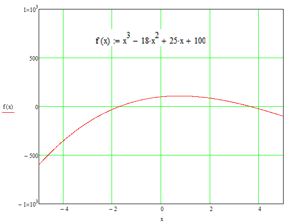
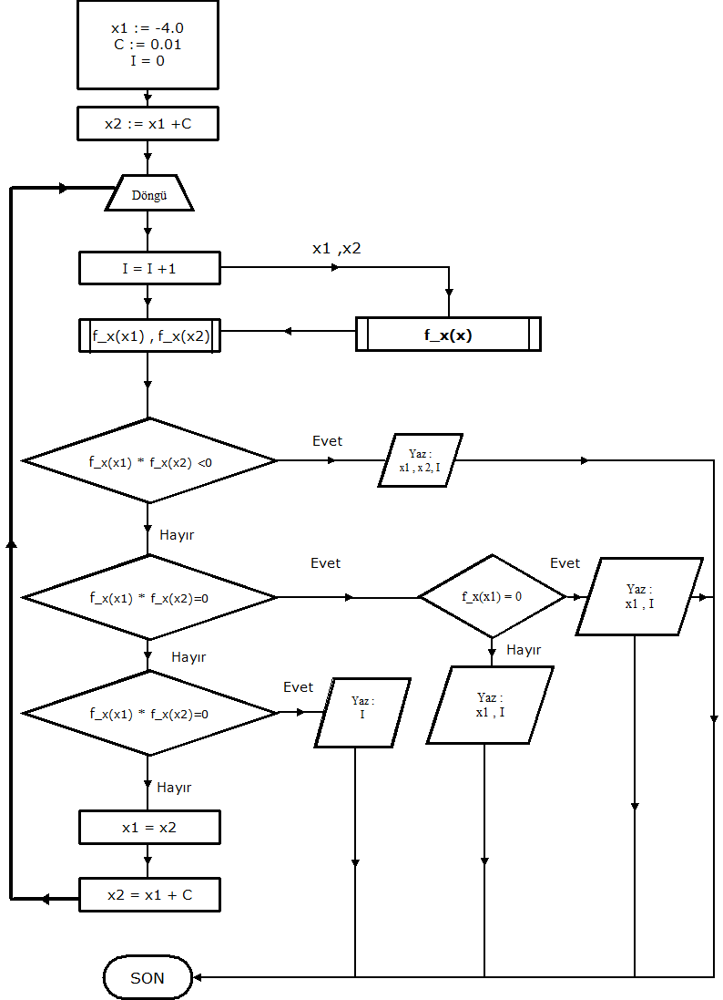

Ada Programlama Dili Temelleri
Bölüm 6
Döngüler
Bölüm 6 Sayfa 1
6.1 Genel Döngü Tanımı Ve Sözdizimi
Bilgisayar programlarında döngüler, ardışık bildirimlerin sıfır veya birden çok kez tekrarlanmasıdır. Döngüler bilgisayar programlarında büyük rol oynarlar. Örnek olarak milyonlarca insanın kimlik kodlarının teker teker taranarak aranan numaranın bulunması, ancak döngüler sayesinde gerçekleşebilir.
İlging bir saptama olarak, Ada programlama dilinde, döngülerin GOTO deyimleri ile, hiçbir özel yapılanma gereği olmadan gerçekleştirilebileceğini belirtielim. Fakat bu yöntem, hiç uygulanmz. Bunun nedeni, programı okuyacak olanların GOTO deyimi ile karşılaştıklarında bunun bir döngü sistemi olduğunun anlayamayacakları olasılığının çok yüksek olabileceğidir. Programı okuyacak olanlar, GOTO deyimleri arasında kaybolabilir ve programı iyi okuyamayabilirler. Genel olarak GTOTO deyimi, çağdışı kabul edilir ve görenlerde bir tedirginlik duygusu uyandırır. Bu açıdan, döngülerin tasarımı için, Ada programlama dilinin öntanımlı döngü yapılarının kullanılması dışında bir yöntemin akla bile getirilmemesi gerekir.
Ada 2012 spesifikasyonu, döngü sözdizimini aşağıdaki gibi tanımlamıştır:
loop_statement ::= [loop_statement_identifier:]
[iteration_scheme] loop
sequence_of_statements
end loop [loop_identifier];
iteration_scheme ::= while condition | for loop_parameter_specification
loop_parameter_specification ::= defining_identifier in [reverse] discrete_subtype_definition
Yukarıdaki Ada döngü sözdiziminde tüm terimlerin isteğe bağlı olduğu görülüyor. Temel yapı,
loop Bildirimler... end loop;
şeklindedir. Böyle bir döngü çalışabilir, ama durdurulamaz, çünkü bir çıkış mekanizması yoktur. Bu yüzden buna sonsuz döngü adı verilir. Sonsuz döngü birkez başladıktan sonra, bilgisayarı kapatmadan sona erdirmenin bir yolu bulunamaz. Bu yüzden sonsuz döngü yararlı bir yapılanma değlidir.
Ada döngü sözdiziminin incelendiğindğinde [loop_statement_identifier:] şeklinde bir döngü isminin verilebildiği görülüyor. Eski bir Pascal özelliği olan döngü isimleri, görüldüğü gibi zorunlu değildir tam aksine döngü isimlerine çok az durumda gereksinme olur. Döngü ismi olan bir sonsuz döngü sistemi,
Dış_Döngü : loop Bildirimler... end loop Dış_Döngü;
şeklindedir. Döngü ismi verilirse döngü başında belirtilir ve ismin ardına bir kolon (:) eklenir. Döngü bitiminde mutlaka biten döngünün adının belirtilmesi gerekir aksi halde derleyici döngü ismini yok hükmünde sayar.
Döngülere isim verilmesi sadece birkaç içiçe döngü olduğunda ve bu döngü sisteminde, iç döngülerden biri tamamlanınca belirli bir dış döngüye atlamasının sağlanması amacı ile yapılır. Tek başına olan veya içiçe olup görevi tamamlanınca normal olarak bir üst döngüye atlayan alışılagelmiş döngü sistemlerinde döngülerin isimlendirilmesine gerek yoktur.
Döngülerden çıkış yöntemi, aşağıda sözdizimi görülen exit bildirimi ile sağlanır.
exit_statement ::=
exit [loop_name] [when condition];
Sözdiziminden de görüldüğü gibi, exit bildirimi, hiçbir çıkış döngüsü ismi ve çıkış koşulu bildirilmeden de kullanılabilir.Fakat, bu sonsuz döngü yazılımı gibi extravagent bir davranış biçimi olur ve hiçbir anlamı olmaz. Çıkış döngösü isminin kullanılması için, exit bildiriminin bu döngünün içinde olması gerekir. Her döngü nasıl olsa bir üst döngüye çıkış yapacağından, eğer bir üst değil bunun üstünde bir döngüye çıkış yapılması isteniyorsa, çıkış döngüsü ismi kullanmanın bir anlamı olabilir, yoksa bir üst döngüye çıkış yapılacaksa, herhangibir döngü ismi kullanılması gereksizdir. Sözdiziminde önemli olan anahtar terim, koşul terimidir. Koşul, sonucu Boolean bir değere indirgenebilen bir mantıksal ifadedir. Bu durumda, her gereksinmeyi karşılayacak kullanıcı tasarımlı döngüler yaratılabilir.
Aşağıdaki döngü örneği, bir fonksiyonun kökünün bulunduğu bir değer aralığını saptamak amacı ile uygulanmaktadır. Bir f(x) fonksiyonun köklerinden biri, f(x) = 0 olduğu x değerlerinden biridir (öyle bir değer varsa). Eğer, f(x1) * f(x2) < 0 ise kök değeri, x1 ve x2 değerleri arasındadır. Eğer f(x1) * f(x2) = 0 olursa x1 veya x2 değerlerinden birisi fonksiyonun köküdür.
Fonksiyonlar kaprisli yapılanmalardır. Köklerinin olup olmadığı veya nerede olduğu hiç belli olmaz. Her fonksiyonun cebirsel incelenmesi yanında önce grafiğinin incelenerek davranışının yakından gözlenmesi, köklerinin olup olmadığı ve kökleri varsa, kaç tane kök olduğu ve bunların yaklaşık aralıkları belirlenmelidir. İnceleyeceğimiz foksiyonun grafik incelemesi aşağıda görülmektedir.

Şekil 6.1 x3-18 x2 + 25 x + 100 Fonksiyonun Grafiği
Yukarıda görülen fonksiyonun grafiğinden, fonksiyonun iki tane kökü olduğu görülüyor. Bunlardan biri -2 ile 0 arasında diğeri +2 ile +4 arasında yer alıyor. Grafik olarak belki daha hassas bilgiler de alabiliriz, fakat bu zahmetli olur. Sürekli grafiğin eksenlerini daraltıp köklerin bulunduğu aralığın daha da daraltılması yöntemi uygulanabilir fakat pratik ve modüler olmaz. Yani, grafik olarak bulunacak bir çözüm hem emek yoğun olur, hem de her fonksiyon için geçerli olmaz. Grafik metotla, her fonksiyon için, ayrı bir çalışma yapmak gerekir. Oysa sayısal yöntem sistematik ve modülerdir. Bir yöntemi tüm fonksiyonlara uygulayabiliriz.
Bu çalışmada fonksiyonların kökünün bulunması için, "Kaba Güç" (Brute Force) denilen bir yöntem kullnacağız. Bu yöntem, fonksiyonların kökünün bulunması için, kesinlikle en iyi yöntem değildir, fakat anlaşılması ve uygulaması en kolay yöntemlerden biridir. Bütün yapılacak şey, bir aralık saptamak ve bu aralıkta f(x_ilk) * f(x_son) < 0 olup olmadığına bakmaktır. Doğal olarak f(x_ilk) * f(x_son) = 0 olursa, x_ilk veya x_son dan birisi kök , yani ya f(x_ilk) ya da f(x_son) = 0 olmalıdır. Fakat bunun gerçekleşme olasılığı çok azdır ve genellikle bu olasılık gözardı edilir. Eğer aranan kök bu aralıkta bulunmazsa, yani, f(x_ilk) * f(x_son) < 0 veya f(x_ilk) * f(x_son) = 0 değilse, o zaman x_son = x_ilk olarak değiştirilir, x_xon = x_ilk + artım olarak belirlenir ve yeniden bu ralıkta kök olup olmadığı sınanır. Eğer kök bulunmuşsa, aralık belirtilir ve işlem tamamlanır. Oluşturulmuş aralıkta kök bulunmamışsa, aralık yeniden arttırılır ve deneme sayısı belirli bir iterasyon sayısına ulaşılıncaya kadar aralığın ilerletilmesine devam edilir. Bu yöntemin akım şeması aşağıda görülmektedir.

Şekil 6.1 Kaba Güç Yönteminin Akım Şeması
Yukarıdaki akım şemasından , bu yöntemin çok olasılıklı karar mekanizmalarının kullanıldığı bir yöntem olduğu görülüyor. Bu yöntemin yapısal programlama sistematiği içinde programlanmış bir örneği aşağıda görülmektedir.
With Ada.Text_IO; With Ada.Long_Long_Float_Text_IO; procedure b6_1_uyg_1 is x1 ,x2 : Long_Long_Float; C : Constant Long_Long_Float := 0.001; I :Integer := 0; function f_x ( x : Long_Long_Float) return Long_Long_Float is begin return x**3-18.0*x**2+25.0*x+100.0; end f_x; begin x1 := -4.0; loop x2 := x1 + C; if (f_x(x1) * f_x(x2)) < 0.0 then Ada.Text_IO.Put("Kök içeren aralığın alt sınırı : "); Ada.Long_Long_Float_Text_IO.Put(x1); Ada.Text_IO.New_Line; Ada.Text_IO.Put("Kök içeren aralığın üst sınırı : "); Ada.Long_Long_Float_Text_IO.Put(x2); Ada.Text_IO.New_Line; Ada.Text_IO.Put("Kaydedilen Iterasyon Sayısı : " & Integer'Image(I)); exit; elsif f_x(x1) * f_x(x2) = 0.0 then if f_x(x1) = 0.0 then Ada.Text_IO.Put("Kök Değeri : "); Ada.Long_Long_Float_Text_IO.Put(x1); Ada.Text_IO.New_Line; Ada.Text_IO.Put("Kaydedilen Iterasyon Sayısı : " & Integer'Image(I)); else Ada.Text_IO.Put("Kök Değeri : "); Ada.Long_Long_Float_Text_IO.Put(x2); Ada.Text_IO.New_Line; Ada.Text_IO.Put("Kaydedilen Iterasyon Sayısı : " & Integer'Image(I)); end if; else x1 := x2; I := I + 1; if I > 10000 then Ada.Text_IO.Put_Line("Maksimum Iterasyon Sayısına Ulaşıldı ve Fonkiyonun bir Kökü Saptanamadı !"); exit; end if; end if; end loop; end b6_1_uyg_1;
Bu programın sonucu,
Kök içeren aralığın alt sınırı : -1.70599999999999995E+00
Kök içeren aralığın üst sınırı : -1.70499999999999995E+00
Kaydedilen Iterasyon Sayısı : 2294
olmaktadır.
Yukarıdaki prosedürde uygualnmaış olan döngü yöntemi üzerinde çok övgülü sözlerin söylenebileceği açıktır. Söylenecek en doğru ve kısa sözcüğün, bu döngü sisteminin bir bilgisayar programlama dilinin kullanıcılara sunabileceği döngü sistemlerinin en gelişmiş olanı olduğudur. Bunun çok çeşitli nedenleri bulunmaktadır. Herşeyden önce, bu döngü sistemi, sınırsız özgür ve esnektir. Programlama dili kullanıcılara sadece sonsuz döngü (loop) ve çıkış (exit)olanağını sunmaktadır. Bu olanakların kullanım yöntemleri, aynı yukarıdaki programda görüldüğü gibi tamamen programcının isteğine bırakılmıştır. Programcı döngü tasarımın tüm adımlarını istediği gibi düzenleyebilmektedir. Bir programlama dilinde bundan fazlası elde edilemez ve bu olanakları ancak Ada kullanıcılara sunmaktadır. Sırası ile açıklayalım. Döngünün her devrine bir iterasyon adı verilir. Matematikte döngüler ile sınama yolu ile çözüm yöntemine "iteratif çözüm yöntemleri" adı verilir. Gerçekleştirilen iterasyon sayısı, iterasyon sayacı, döngü sayacı, döngü indisi (index) veya döngü parametresi adı verilen bir tamsayı değişkeni ile kontrol edilebilir. Döngü indisi FORTRAN devrinden gelme bir gelenekle, I , J , K , L , M , N gibi harfler kullanılarak tanımlanır. Bu harflerin kullanımı hiçbir şekilde zorunlu değildir, fakat yazılan programların kolay okunması için bir iletişim yöntemidir. Ada loop yapılanmasında, döngü indisinin kullanılıp kullanılmayacağı artışının nasıl yapılacağı özgürce seçilmektedir. Bizim programımızda döngü indisi I ile tanımlanmış ve her döngüde bir tamsayı artacak şekilde programlanmıştır. Bunun dışında döngüden çıkış istenirse salt GOTO istenirse mantıksal yöntemlerle yapılabilir. Yukarıdaki programda sadece mantıksal yöntemler kullanılmıştır.
Döngü tasarımında en büyük tehlike, sonsuz döngüye girilmesidir. Bunun önlenmesi için çeşitli önlemler alınabilir. Döngü çeşitlerinden birisi, belirli sayıya kadar döngü yapılan, öntanımlı (preset) bir döngü sayısına kadar iterasyon yapılmasıdır. Döngü sayacının düzenlemesi doğru yapıldığında, bu tip döngülerde sonsuz döngüye girilmesi olanağı yoktur.
Bazı döngülerde ise, iterasyonlara belirli bir koşulun gerçekleşmesine kadar devam edilmesi öngörülmüştür. Bu tip döngülerde, sonduz döngüye düşülmesi tehlkesi her zaman bulunmaktadır. Çünkü, öngörülen koşul hibir zaman gerçekleşmeyebilir. Yukarıdaki örnekteki yapılanması da, böyle bir döngü sistemidir. Bu durumda, mutlaka ama mutlaka, döngünün tamamlanacağı bir maksimum döngü sayacı değeri belirlenmeli ve bu değere ulaşıldığında ne olursa olsun döngüden çıkış sağlanmalıdır. Yukarıdaki programda da böyle bir maksimum döngü sayacı değeri tanımlanmıştır.
Ada loop yapılanmalarının tasarımı, sonuna kadar özgürdür. Döngü sonu, döngünün başında, döngünün ortasında, döngünün sonunda kontrol edilebilir. Gerçekleşmesi beklenilen olasılıklra göre birden fazla exit bildirimi bulunabilir. Unutulmaması gereken nokta bunlardan sadece bir tanesinin etkin olabileceğidir. Özetle, Ada loop yapılanmalarının tasarımında, tüm sorumluluk programcıya aittir ve işlerin iyi gitmemesi halinde tek suçlanacak olan da programcıdır.
Ada loop yapılanması, bir programcıya döngü yapılanması için gereksinimi olan her aracı sağlar. Bu nedenle, başka yapılanmalara hiçbir zaman ve hiçbir şekilde gereksinme olmaz. Buna rağmen, Ada programlama dili, kullanıcılara iki tane daha öntanımlı döngü yapılanması (iteration_scheme) sağlamıştır. Bunlar tüm programlama dillerinde genel olarak bulunan while ve for yapılanmasıdır. Ada programlama dilinde genel özgür loop yapılanmasının tüm gereksinmeleri karşıladığı ve bu iki öntanımlı yapılanmaya kesinlikle gereksinim olmadığı halde, biligi verme açısından bu iki öntanımlı iterasyon şeması incelenecektir.
6.2 While Döngüsü
6.1 deki genel döngü tanımı sözdizimi incelendiğinde, while iterasyon şeması içeren bir döngü sisteminin zorunlu terimlerinin
while Boolean İfade loop Bildirimler... end loop;
şelinde olacağı görülür. Bu yapılanma, genel döngü sisteminin
loop if Boolean İfade then exit; end if; Bildirimler... end loop;
şeklindeli yapılanması ile aynıdır. Her ikisi de döngü sonunun döngü başında kontrol edildiği döngü sistemleridir.
6.3 For Döngüsü
For döngüsü biraz daha detaylı bir yapıya sahiptir. For döngüsünün sözdizimi,
for Döngü_Parametresi_Tanımı loop Bildirimler... end loop;
şeklindedir
Burada görülen Döngü_Parametresi_Tanımı terimi için, en az bildirim,
Tanımlayıcı in (veya in reverse) Alt_Veri_Tipi
olmalıdır. Bu şekilde,
for I in Integer loop ... Bildirimler ... end loop;
döngüsü, döngü parametresi olan I değeri, Integer veri tipinin en alt değerinden başlayarak ve döngüde bir tamsayı artarak döngüyü tüm Integer veri tipinin eleman sayısı kadar tekrar ettirecektir. Eğer döngü,
for I in reverse Integer loop ... Bildirimler ... end loop;
şeklinde kurulursa, döngü parametresi olan I değeri, bu sefer Integer veri tipinin en üst değerinden başlayarak ve her döngüde bir tamsayı azalarak döngüyü Integer veri tipinin en düşük değerine erişene kadar tekrar ettirecektir. Eğer daha az sayıda iterasyon gerekiyorsa, kapsam kısıtlaması bildirimi yapmak gerekir. Böylece,
for I in Integer range 1.. 10 loop ... Bildirimler ... end loop;
döngüsü, I değeri 1 den 10 a kadar değerler alana kadar döngüyü 10 kez tekrar ettirecektir. Aynı şekilde,
subtype Döngü_Sınırı is Integer range 1..10; for I in Döngü_Sınırı loop ... Bildirimler ... end loop;
döngüsü, oluşturulabilir. Aynı işlevi yapacak,
subtype Döngü_Sınırı is Integer range 1..10; for I in Döngü_Sınırı'Rangeloop ... Bildirimler ... end loop;
döngüsü de geçerlidir. Yine,
subtype Döngü_Sınırı is Integer range 1..10; for I in Döngü_Sınırı range 1 ..5 loop ... Bildirimler ... end loop;
döngüsü de geçerlidir. Görüldüğü gibi olanaklar sonsuzdur. Ama sonuçta hiçbir şey genel loop yapılanmasından fazla bir olanak sağlamamaktadır.
Burada incelenen, for döngüsünün önemli bir kısıtlaması bulunmaktadır. Burada döngü parametresi I nin değeri tanıma göre, döngünün kapsamalığının en alt veya en üst değerinden başlayarak bir artar veya ekslir. Bunu değiştirmenin olanağı yoktur. Döngü içinde I değeri asla değiştirilemez. Bu değere bir atama yapılamaz. Ada for döngülerinin döngü parametresi, daima bir artar veya eksilir. Bu kısıtlama, Ada programlama dilinde for döngülerinin kullanışını önemli ölçüde etkiler.